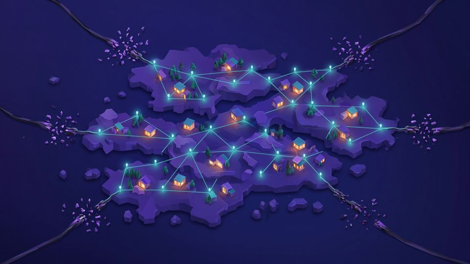
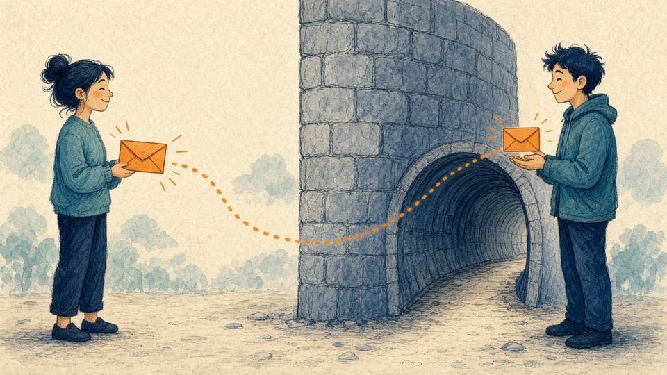
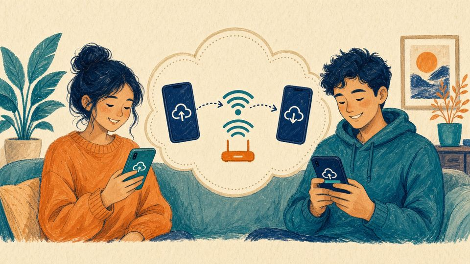

دلتاچت در قطعی اینترنت
دلتاچت برای رساندن پیام همیشه به یک رله (در برنامه فارسی: گذرگاه) نیاز دارد و بدون هیچ سروری، مثلاً با بلوتوث، کار نمیکند. اما رله لازم نیست بیرون از ایران باشد. وقتی اینترنت بینالملل قطع است و فقط شبکه ملی کار میکند، رلهای که روی سروری داخل ایران است همچنان در دسترس میماند. مهمترین کار این است که پیش از قطعی آماده شوید.
۱. شبکه ملی چیست و چرا رله داخلی کار میکند
شبکه ملی اطلاعات، شبکهای داخلی است که در قطعیها سرویسهای داخلی را باز نگه میدارد و دسترسی به اینترنت جهانی را میبندد. رلهای که روی سرور داخلی است در این شبکه در دسترس میماند. گرداننده شبکه و سرور داخلی متن پیام را نمیبیند، ولی میتواند ببیند که شما به آن رله وصل شدهاید و پیامها چه زمانی و با چه حجمی رد و بدل میشوند.
منبع: گزارش مشترک ASL19، میان و دلتاچت درباره «افسانه اینترنت داخلی» (فروردین ۱۴۰۵) (asl19.org)
۲. قبل از قطعی، این کارها را انجام دهید
- برنامه را به آخرین نسخه بهروز کنید؛ نسخههای تازه در برابر روشهای جدید فیلترینگ مقاومترند.
- رله داخلی را بهعنوان رله دوم اضافه کنید (بخش ۲).
- از نمایه پشتیبان بگیرید: تنظیمات ← گپها ← برونبری پشتیبان. فایل پشتیبان رمزنگاریشده نیست؛ آن را جایی امن و ترجیحاً آفلاین نگه دارید.
- فایل نصب (APK و نسخه رایانه) را از صفحه دانلود و مینیاپهای لازم را از صفحه مینیاپ و ربات بگیرید و روی گوشی یا فلش نگه دارید.
- از QR رله داخلی و QR دعوت خودتان عکس بگیرید و از مخاطبهای نزدیکتان هم بخواهید رله دوم را اضافه کنند.
۳. افزودن رله داخلی به نمایه فعلی (چند رله)
از نسخه ۲.۴۸ هر نمایه میتواند چند رله داشته باشد؛ اگر یکی بسته شود، پیامها خودکار از دیگری میروند.
- تنظیمات ← پیشرفته ← رلهها ← افزودن رله.
- QR صفحه delta.sudoshz.ir را اسکن کنید یا لینک دعوت آن را بچسبانید.
- صبر کنید تا وضعیت اتصال «متصل» نشان داده شود.
همه دستگاههای خودتان باید نسخه ۲.۴۸ یا بالاتر داشته باشند؛ بهتر است مخاطبها هم برنامه را بهروز کنند. اگر برنامهتان این گزینه را ندارد، از روش «نمایه تازه» در صفحه رلهها استفاده کنید.
منبع: وبلاگ دلتاچت، ۱۱ فروردین ۱۴۰۵ (delta.chat/en/2026-03-31-zero)

۴. پروکسی داخل دلتاچت
اگر یک پروکسی SOCKS5، HTTP یا Shadowsocks در دسترس دارید، میتوانید فقط دلتاچت را از آن عبور دهید: تنظیمات ← پیشرفته ← پروکسی ← افزودن پروکسی، و لینکی مثل socks5://… یا ss://… را بچسبانید یا QR آن را اسکن کنید. لینکهای پروکسی تلگرام (t.me/socks) هم شناخته میشوند. گرداننده پروکسی متن پیام را نمیبیند، چون پیام رمزنگاری سراسری دارد، ولی IP شما و نشانی رلهای را که به آن وصل میشوید میبیند. از پروکسی ناشناس با احتیاط استفاده کنید.

۵. شبکه محلی بدون هیچ اینترنتی
در یک دفتر، خوابگاه یا محله که فقط شبکه محلی (Wi-Fi یا LAN) دارد، میتوانید مدمیل را روی یک رایانه همیشهروشن در همان شبکه، با IP محلی و گواهی خودامضا نصب کنید (حالت ۱ در صفحه مدمیل). همه روی آن نمایه میسازند (یا آن را رله دوم میکنند) و تا وقتی در همان شبکهاند با هم گپ میکنند. این رله به بیرون وصل نیست، پس فقط برای همان جمع است.
۷. دستگاه دوم و انتقال بدون اینترنت
افزودن دستگاه دوم فقط به یک شبکه محلی مشترک نیاز دارد، نه اینترنت. اگر وایفای نیست، هاتاسپات یک گوشی را روشن کنید و دستگاه دیگر را به آن وصل کنید. بقیه گامها در آموزش دستگاه دوم آمده است.
۸. وقتی وصل نمیشود
- برنامه را بهروز کنید؛ در سال ۲۰۲۶ بعضی مسدودسازیها (مثلاً در روسیه) با بهروزرسانی برنامه برطرف شد.
- رله یا پروکسی دیگری را امتحان کنید.
- گزارش اتصال را از تنظیمات ← پیشرفته ← دیدن گزارشها بردارید و فقط بهصورت خصوصی برای تیم دلتاچت (delta@merlinux.eu) بفرستید. این گزارش را هیچجا منتشر نکنید، چون ممکن است اطلاعات شناسایی داشته باشد.
- گزینه «پذیرفتن گواهی نامعتبر» را فقط برای رلهای روشن کنید که خودتان یا فردی مورد اعتماد با گواهی خودامضا راه انداخته، نه برای رلههای عمومی.
منابع: دو گفتگوی انجمن پشتیبانی دلتاچت (support.delta.chat/t/5258 و /5369)
۹. ایمیل کلاسیک بهعنوان آخرین راه
اگر هیچ رلهای در دسترس نبود، میتوانید نمایهای روی یک ایمیل کلاسیکِ داخلی بسازید (نمایه تازه ← استفاده از سرور دیگر ← استفاده از رایانامه کلاسیک بهعنوان گذرگاه). پیام بین دو کاربر دلتاچت همچنان رمزنگاری سراسری دارد، ولی ارائهدهنده ایمیل نشانیها و زمان پیامها را میبیند و اعلان فوری هم ندارد. این نمایه را از نمایه اصلی جدا نگه دارید.